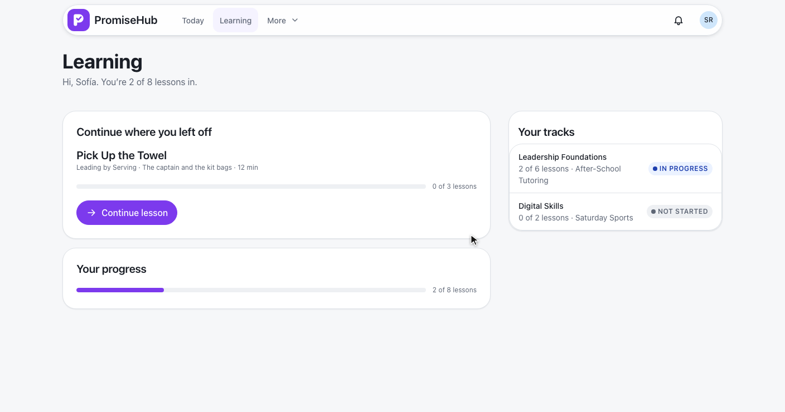
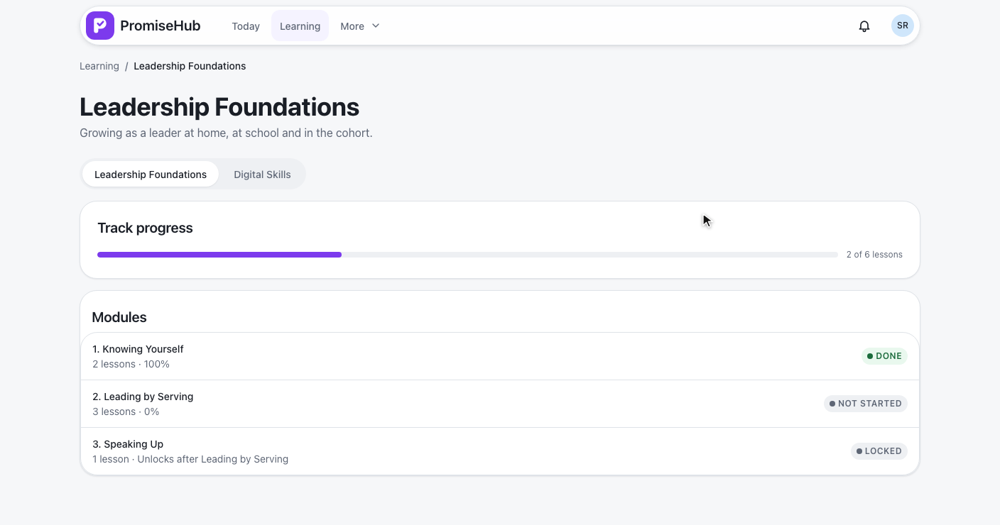
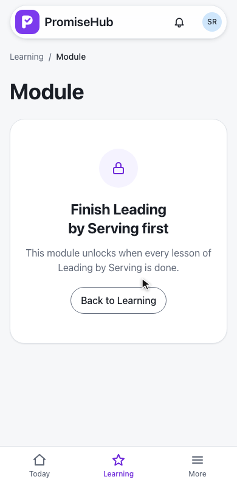
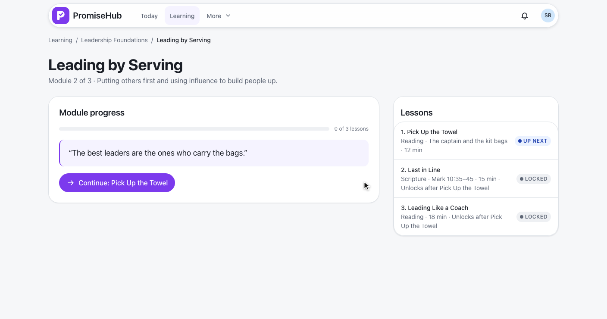
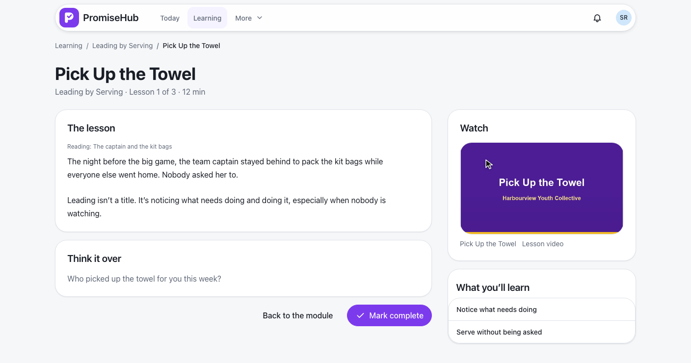
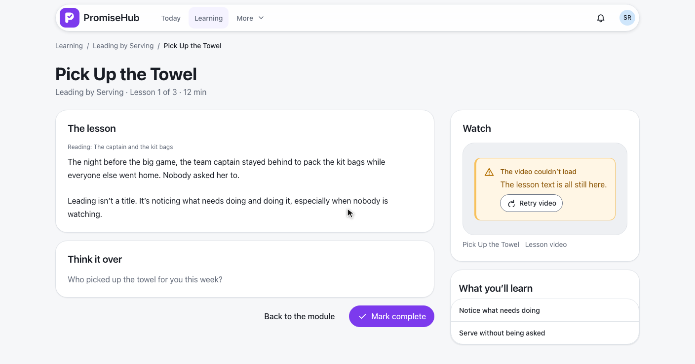
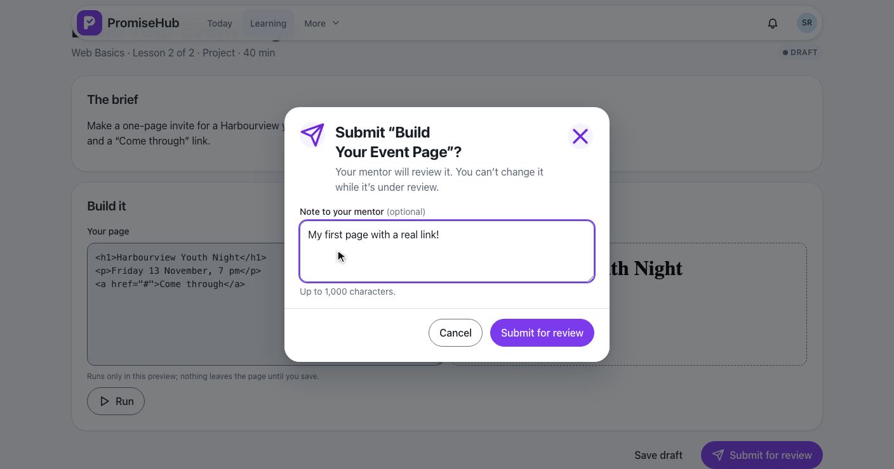
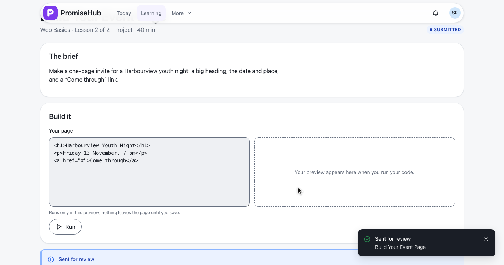
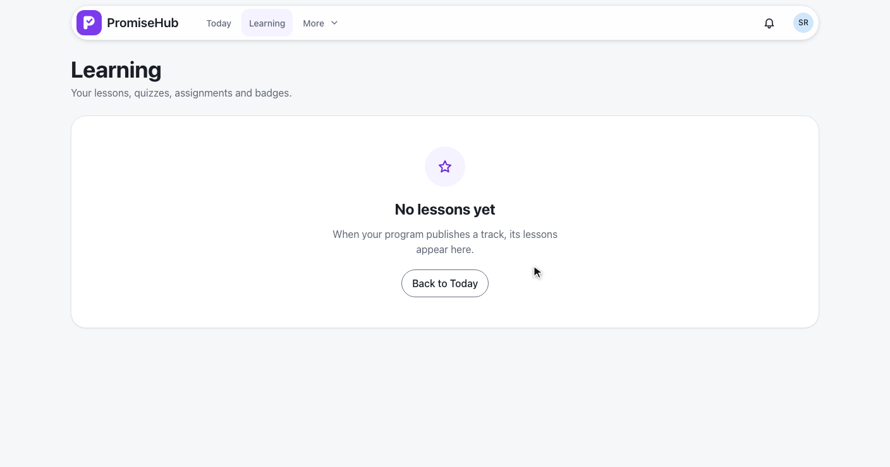
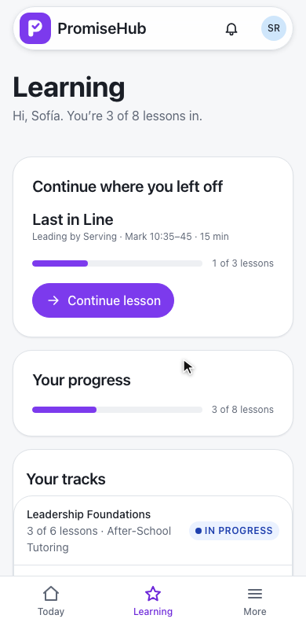

PromiseHub · Video 57
Complete lessons
A youth's tracks, modules that unlock in order, lessons with video, and coding lessons and projects
A youth's tracks, modules that unlock in order, lessons with video, and coding lessons and projects
GET /learning/home, GET /learning/tracks/{id}, the track switch is ph-button-group.


| Item | Locked while | Answer |
|---|---|---|
| Module | Its published prerequisite is not done | 403 locked, unlockAfter |
| Lesson | Its module is locked, or an earlier lesson is not done | 403 locked, unlockAfter |
| Draft, unfollowed, other organization | Always | 404 |
LearnerProgress serves every read and write · progress per youth membership in LessonProgress · ADR 0051


GET /learning/lessons/{id}, POST …/complete, audited as Completed on LessonProgress.


ph-video-player · GET /learning/lessons/{id}/video · IFileStore.OpenReadAsync · 206 for Range
ph-code-sample, ph-code-playground in a sandboxed, script-blocking preview, PUT /learning/coding/{id}/progress.


POST /learning/coding/{id}/submission · once, as Submitted · audited on ProjectSubmission
No lessons yet, Try again, a failed video, and Learning off going to Today.
| Caller | Answer |
|---|---|
| Staff, mentor, volunteer | 403 |
| Youth without consent | 403 consent-required |
| Youth in no program | 403 no-cohort |
| Learning off | 404, pages go to Today |
| Another organization | 404 |

LearningBrowseTests, LearningLessonsTests, LearningVideoTestsLearningCodingTests, LearningProjectTests, LocalFileStoreTestse2e/tests/learning/: browse, lessons, lesson-video, coding, project
Learning, a locked module and a scripture lesson at 390 pixels, no sideways scrolling.
Next: apply or refer a youth to a program